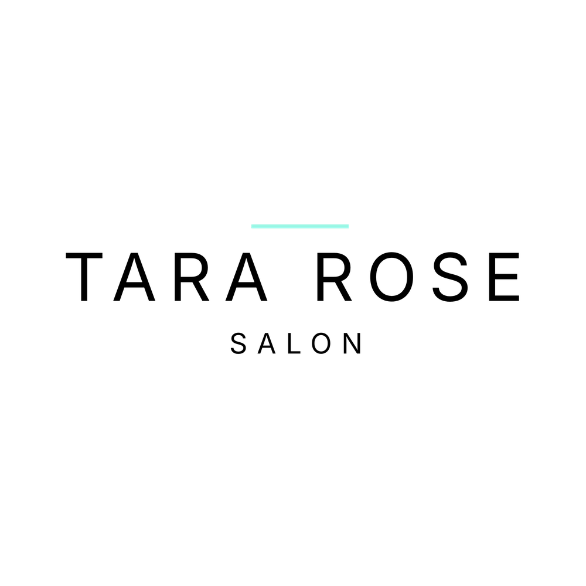

Reading the numbers…
How the group is doing against its aims. If a number is red, start with the Do this card.
Loading data...

Where the Tara Rose Salons team in the UAE and Bahrain keeps its procedures, training and dashboards. Sign in with your work account.